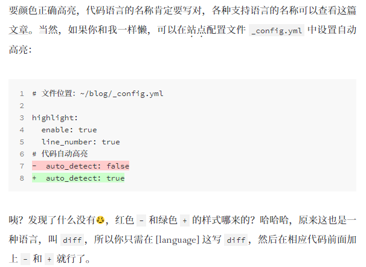

Diff-synatx-in-code-blocks
这几次看别人博客时总是发现了一些东西，比如有的博客中总是出现下面的这种样式：
1 | // this is a test. |
这样的样式，很方便：红色表示被删减，绿色表示被增加。人眼对色彩是非常敏感的，这样鲜明的对比很容易被人识别出来，方便阅读博客。
第一次见到diff syntax这个词是在这个地方，其中讲述到这个功能的地方如下图

当时很想找到如何才能在自己博客的代码段实现这个功能，百度中也未搜索到这个东西，在不知道这个功能名称的前提下去根据功能的描述进行搜索，很费脑筋去想关键词，这样一来如果自己的描述关键词不沾边，结果可想而知。
想要实现这个效果：
在代码块中制定语言，在**```**后加上diff表示语言，然后接着如下进行书写就可以了。
1 | - removed |
参考文档
[1] 打造个性超赞博客 Hexo + NexT + GitHub Pages 的超深度优化
[2] stackoverflow: Diff syntax highlighting in Github Markdown
[3] MarkdownDiffExample.md